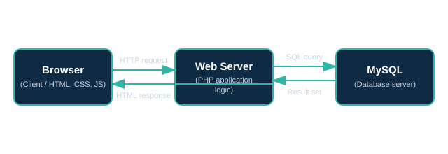

Static demo — all data lives only in your browser (localStorage), not a real MySQL database. The full PHP + MySQL source is in the repo.
About & Web Concepts
A short, practical tour of the foundational Web Programming concepts
this project is built on. Full explanations and setup notes live in
the project README.md. This particular page is a static
client-side build — the real app's version is about.php.
The World Wide Web, in brief
The World Wide Web began in 1989 as a way to share linked
documents over the Internet; it has since evolved from static pages
to the dynamic, database-backed applications like this tracker.
Related Internet services include Email (message
delivery via SMTP/IMAP), Telnet (remote terminal
access), and FTP (file transfer) — all predate the
Web but still run over the same Internet infrastructure. Modern
uses built on top of the Web include e-commerce,
cloud computing (renting storage/compute instead of
owning servers), and video conferencing.
How a request reaches this application

ISP (Internet Service Provider): the company that connects your device to the Internet backbone.
IP address: the numeric address (e.g. 127.0.0.1) a server is reached at.
URL: a human-readable address such as http://localhost/deadline-tracker/index.php that identifies a resource.
DNS (Domain Name Server): translates a domain name into the IP address it maps to.
Web browser: the client that sends HTTP requests and renders the HTML/CSS/JS response (Chrome, Firefox, Safari...).
Search engine: a separate service (e.g. Google) that crawls and indexes pages so users can find them by keyword.
Web server vs. application server
A web server (Apache, Nginx, or PHP's built-in server)
accepts HTTP requests and returns static files or hands dynamic
requests off for processing. An application server
executes the business logic — here, that's PHP reading/writing
the tasks table via PDO. In this project PHP's
built-in development server plays both roles locally. (This
particular static page has no application server at all —
everything runs in the browser.)
ReactJS vs. React Native
ReactJS renders to the browser DOM and is used
for web applications — see the react-demo/ folder
in this project. React Native uses the same
component/JSX model but renders to native mobile UI
components (iOS/Android) instead of the DOM, and is not
used anywhere in this project since it targets mobile apps,
not the Web.
JavaScript basics, live
A tiny, self-contained demo of the fundamentals from Unit II:
a button wired to a function, a variable, and a plain JavaScript
object, all defined in the external file
assets/js/ui.js.
Click the button to run a JavaScript function.
Hosting, Git, and React DevTools
Static hosting (for this page, and for the React demo) simply means
a server returns the pre-built HTML/JS/CSS files as-is; see
react-demo/README.md for exact deployment steps. The
root README.md also documents the handful of Git
commands (init, add, commit,
push) used to version this project, and explains the
React Developer Tools browser extension used to inspect the
component tree and state while the React demo is open.